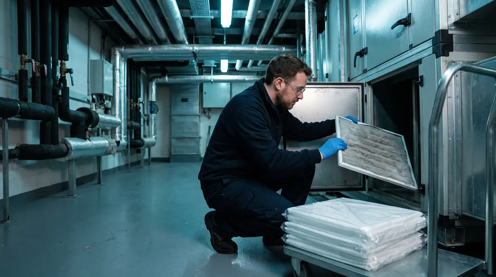
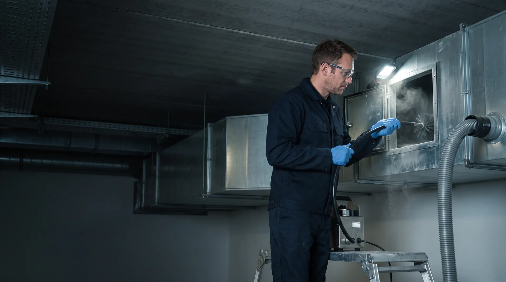
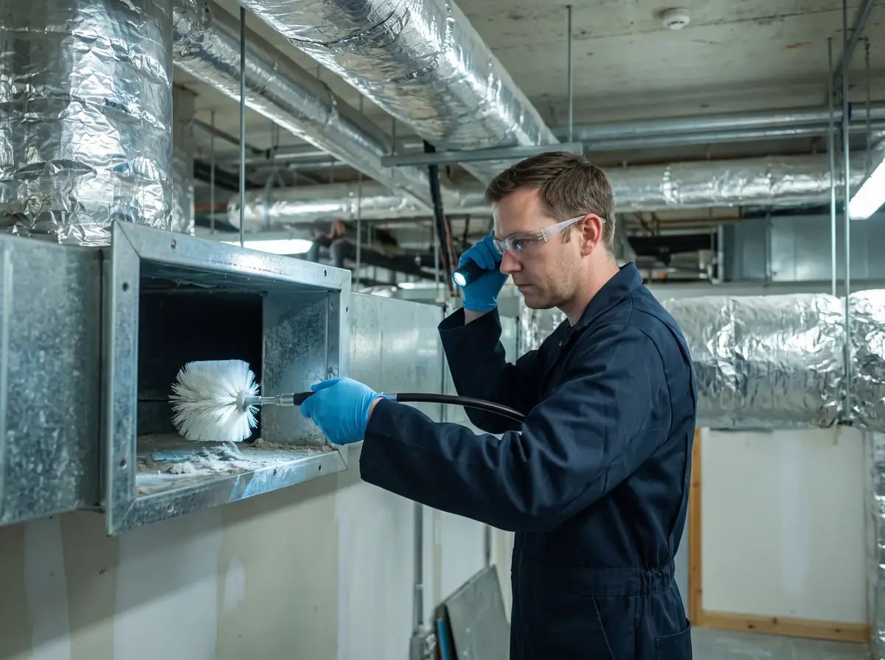
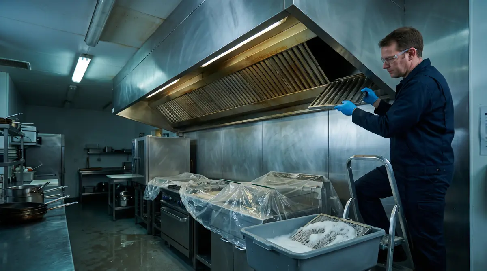
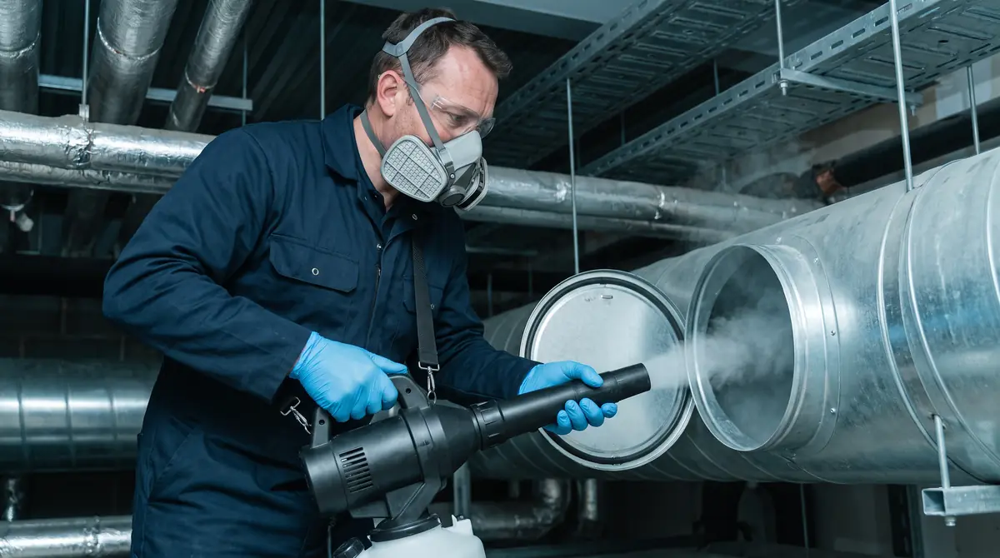
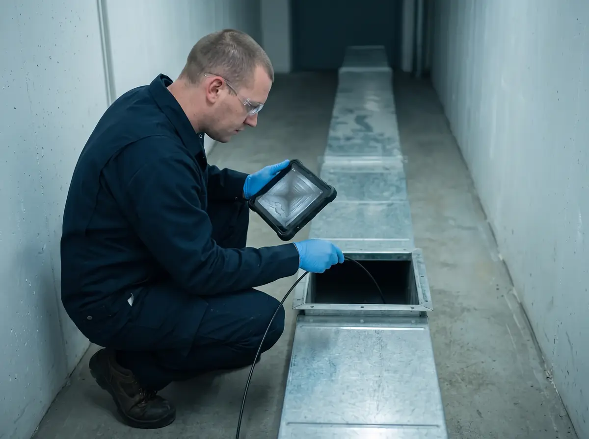

Приток и вытяжка
Очистка от пыли
Приточно-вытяжные системы офисов, торговых центров, складов и производств: короба, вентиляторы, секции приточных установок, решётки и диффузоры. Щёточные машины и промышленный пылесос с фильтром.

Чистим и дезинфицируем приточно-вытяжную вентиляцию, кухонные вытяжки и системы кондиционирования в Москве и области. Работаем ночью и в санитарные дни, чтобы кухня и производство не останавливались.
0 из 5 на месте
Отметьте, что уже есть на вашем объекте. Каждый пункт инспектор МЧС или Роспотребнадзора может сверить по документам и на месте.
Заказать бесплатный осмотрОчистка и дезинфекция вентиляции — это удаление пыли, жира и горючих отложений из воздуховодов, вентиляторов, фильтров и вытяжных зонтов и последующая обработка внутренних поверхностей зарегистрированным дезинфицирующим средством. Для организаций это обязательная работа не реже 1 раза в год: очистку с актом требует п. 43 Правил противопожарного режима, профилактическую дезинфекцию централизованных систем — п. 132 СанПиН 3.3686-21.


Приточно-вытяжные системы офисов, торговых центров, складов и производств: короба, вентиляторы, секции приточных установок, решётки и диффузоры. Щёточные машины и промышленный пылесос с фильтром.

Вытяжные зонты, жироулавливающие фильтры, короба, вентилятор и выброс на кровле. Жир в коробе горит, а выжигать его запрещено (п. 41 «г» ППР) — снимаем механически и щелочными средствами.

Воздуховоды, приточные установки, фанкойлы и сплит-системы. Средства с СГР, режимом для систем вентиляции и широким спектром действия — орошением или аэрозолем, с расчётом расхода в журнале (пп. 3.12–3.13 МР).
Сроки задают сразу несколько документов: пожарные правила, санитарные правила и методические рекомендации Роспотребнадзора. С 1 сентября 2026 года СП 2.1.3678-20 заменён на СП 2.1.4284-26 — в таблице уже новые пункты.
Очистка от горючих отложений с актом (п. 43 ППР) и профилактическая дезинфекция централизованных систем (п. 132 СанПиН 3.3686-21).
Для централизованных систем кондиционирования и увлажнения воздуха — кроме сплит-систем и кондиционеров малой мощности без увлажнения.
Очистка и дезинфекция фильтров и камер теплообменника в медицинских организациях (пп. 22 п. 24 СП 2.1.4284-26).
| Объект и система | Что делать | Как часто | Основание |
|---|---|---|---|
| Любая организация Вентиляционные камеры, циклоны, фильтры, воздуховоды | Очистка от горючих отходов и отложений с составлением акта | Не реже 1 раза в год | п. 43 ППР в РФ (постановление Правительства РФ № 1479) |
| Медицина, образование, гостиницы, офисы, производство, торговля, транспорт Централизованная вентиляция и кондиционирование | Профилактическая дезинфекция средствами широкого спектра, разрушающими биоплёнку | Не реже 1 раза в год | п. 132 СанПиН 3.3686-21 |
| Те же объекты Централизованные системы кондиционирования и увлажнения воздуха | Микробиологическое исследование на легионеллы | Не реже 2 раз в год | п. 132 СанПиН 3.3686-21 |
| Медицинские организации Механическая приточно-вытяжная вентиляция и кондиционирование | Проверка эффективности работы, очистка и дезинфекция | 1 раз в год | пп. 2 и 27 п. 24 СП 2.1.4284-26 |
| Медицинские организации Сплит-системы в кабинетах, палатах, административных помещениях | Очистка и дезинфекция фильтров и камер теплообменника | Не реже 1 раза в 3 месяца | пп. 22 п. 24 СП 2.1.4284-26 |
| Медицинские организации Вентиляционные камеры и воздухозаборные шахты | Уборка помещений венткамер и воздухозаборных шахт | Камеры — не реже 1 раза в месяц, шахты — не реже 1 раза в 6 месяцев | пп. 27 п. 24 СП 2.1.4284-26 |
| Кухни общепита и пищевые цеха Зонты, жироулавливающие фильтры, короба, вентилятор | Жировая очистка механически и моющими средствами, без выжигания | По графику объекта, но не реже 1 раза в год | пп. 41 «г» и 43 ППР; при ежедневной жарке советуем каждые 3–6 месяцев |
| Любой объект Неблагополучная эпидемиологическая обстановка, например выявлены легионеллы | Дезинфекция по эпидемическим показаниям, в том числе заключительная — только силами дезинфекционной организации | Без ожидания планового срока | пп. 2.4 и 3.2 МР 3.5.0396-25 |
Правила противопожарного режима, утверждённые постановлением Правительства РФ № 1479, действуют до 31 декабря 2026 года. Новые правила утверждает МЧС России: проект приказа опубликован 6 августа 2026 года и, если его примут, вступит в силу 1 января 2027 года. Акт очистки за 2026 год оформляем по действующей редакции, а после выхода приказа сверим форму и ссылки.
Очищаем систему целиком — от воздухозабора до выброса. Если чистить только решётки и фильтры, пыль и жир из коробов снова попадают в помещение.
Круглые и прямоугольные, горизонтальные и вертикальные участки. Работаем через ревизионные люки; если их нет, на осмотре отмечаем, где нужны герметичные инспекционные двери (п. 3.17 МР).
Снимаем жироулавливающие фильтры, отмачиваем и моем в щелочном растворе, очищаем корпус зонта и короб за ним до вентилятора.
Радиальные «улитки», осевые, канальные и крышные: рабочее колесо, корпус и гибкие вставки. Налёт на колесе снижает расход воздуха и разбалансирует вентилятор.
Секции фильтров, нагреватели и охладители, дренажные поддоны, шумоглушители. Фильтры, которые нельзя очистить, меняем на новые (п. 3.25 МР).
Решётки и диффузоры снимаем, моем и дезинфицируем отдельно (п. 3.15 МР), а регулирующие клапаны и шиберы очищаем с обеих сторон через инспекционные двери (п. 3.16 МР).
Сплит-системы, кассетные и канальные блоки, потолочные фанкойлы: фильтры, теплообменник, дренажный поддон и трасса, дезинфекция испарителя.
Камера на гибкой штанге проходит по тем же участкам дважды: на осмотре, чтобы оценить слой отложений и посчитать работы, и после — чтобы вы увидели результат, а не поверили на слово. Фото- и видеоинспекцию для обследования систем прямо называет МР 3.5.0396-25 (приложение 1).

Жир оседает не только на фильтрах, но и в коробе за зонтом, на рабочем колесе вентилятора и у выброса на кровле. Фильтры персонал моет сам, а короб без доступа внутрь не отмыть — именно там копится горючий слой.
Выжигать скопившиеся в воздуховодах жировые отложения запрещено (п. 41 «г» ППР). При ежедневной жарке и работе фритюров советуем чистить короба каждые 3–6 месяцев, а точный интервал определяем по видео на первом осмотре.
Очистку и дезинфекцию оформляем двумя отдельными актами, проверку клапанов и отбор смывов — своими формами. Ниже все 9 бланков в PDF и образцы их заполнения на условном объекте: что обязательно по нормам, что рекомендуют МР 3.5.0396-25 и что остаётся у вас в папке к проверке.
Венткамеры, циклоны, фильтры и воздуховоды — не реже 1 раза в год, с фото до и после. Хранится с документами по пожарной безопасности.
Централизованные системы вентиляции и кондиционирования — не реже 1 раза в год: средство с СГР, концентрация, расход и экспозиция.
Проверяем по документации изготовителя вместе с ответственным за пожарную безопасность; в акте — готовый текст записи в журнал эксплуатации систем противопожарной защиты. Техобслуживание и ремонт клапанов — по отдельной заявке, силами организации с лицензией МЧС России.
Для систем кондиционирования и увлажнения обязателен ещё протокол исследования на легионеллы — не реже 2 раз в год (п. 132 СанПиН 3.3686-21). Его выдаёт аккредитованная лаборатория.
Осмотр и видеоинспекция, способ очистки и объём работ в м² и погонных метрах — основа сметы.
Точки отбора на легионеллы до или после дезинфекции. Пробы отбирает и исследует аккредитованная лаборатория.
Даты, системы, площадь и длина коробов, дезсредство, результаты контроля. Ведётся вкладышами в папке заказчика.
Годовой расчёт средства для дезинфекции орошением. Ведёт наш специалист, выписку получаете по запросу.
Предупреждение работников о сроках и мерах предосторожности и табличка на выключатели на время работ.
Порядок и сроки очистки определяет руководитель организации: шаблон приказа и график по видам систем, включая требования для медицинских организаций.
Жировая очистка зонтов и коробов ночью, акт для пожарной проверки и управляющей компании. Пест-контроль ресторанов
Вытяжки над варкой, жаркой и мойкой, приток в чистые зоны, документы в папку ХАССП. Пест-контроль на производстве
Очистка и дезинфекция раз в год, сплит-системы — раз в 3 месяца, пылесосы с фильтрами H14 (п. 3.28 МР).
Центральное кондиционирование: дезинфекция раз в год и анализ на легионеллы 2 раза в год. Пест-контроль бизнес-центров
Приток торговых залов, крышные вентиляторы, вытяжки фуд-кортов — по участкам, в ночные окна. Пест-контроль магазинов и торговых центров
Кондиционирование и увлажнение номеров и общих зон: дезинфекция, смывы, работы по этажам. Пест-контроль гостиниц
Профилактическая дезинфекция вентиляции и кондиционирования раз в год — в каникулы или выходные.
Очистка венткамер, циклонов и коробов от горючей пыли с актом по п. 43 ППР. Пест-контроль складов
Тараканы и муравьи переходят по вентиляции между помещениями и этажами, а через незащищённые продухи чердаков и подвалов в здание попадают грызуны, птицы и насекомые — в медицинских организациях такая защита прямо требуется (пп. 29 п. 24 СП 2.1.4284-26). На очистке проверяем сетки, люки и следы вредителей и при необходимости подключаем дезинсекцию или дератизацию.
Точную стоимость фиксируем в смете и договоре после бесплатного осмотра. Работаем с юридическими лицами и ИП по безналичному расчёту (с НДС и без НДС).
| Работа | Что входит | Ориентир |
|---|---|---|
| Осмотр, видеоинспекция и смета | Выезд инженера, съёмка 2–3 участков, расчёт работ и окна | 0 ₽ |
| Очистка воздуховодов от пыли | Щёточные машины, промышленный пылесос, видео до и после | от 100 ₽ за м. п. |
| Жировая очистка кухонной вытяжки | Зонты, жироулавливающие фильтры, короба до вентилятора | от 136 ₽ за м. п. |
| Дезинфекция воздуховодов | Средство с СГР по режиму для вентиляции, расчёт расхода в журнале | от 45 ₽ за м. п. |
| Очистка радиального вентилятора | Рабочее колесо, корпус, гибкие вставки | от 2 400 ₽ |
| Очистка и дезинфекция фанкойла | Фильтр, теплообменник, дренажный поддон | от 2 200 ₽ |
| Очистка и дезинфекция сплит-системы | Фильтры, теплообменник, дренаж, дезинфекция испарителя | от 1 600 ₽ |
| Микробиологические смывы | Отбор проб и протокол аккредитованной лаборатории | от 1 400 ₽ |
Длина и сечение коробов, вид отложений (пыль, жир, строительный мусор), высота и доступ — фальшпотолки, шахты, число ревизионных люков, — а также количество зонтов, вентиляторов, установок и кондиционеров.
Подготовка и укрытие оборудования, уборка после себя, видео до и после, акт и запись в журнал. Сеть объектов или несколько зданий — одна смета и общий график работ.
Не реже 1 раза в год. Очистку вентиляционных камер, циклонов, фильтров и воздуховодов от горючих отходов и отложений с составлением акта требует п. 43 Правил противопожарного режима, профилактическую дезинфекцию централизованных систем вентиляции и кондиционирования — п. 132 СанПиН 3.3686-21. В медицинских организациях сплит-системы чистят и дезинфицируют не реже 1 раза в 3 месяца (пп. 22 п. 24 СП 2.1.4284-26). Кухонные вытяжки при ежедневной жарке мы советуем чистить каждые 3–6 месяцев.
Для пожарной проверки — акт очистки вентиляционных камер, циклонов, фильтров и воздуховодов от горючих отходов и отложений (п. 43 ППР) и запись о проверке огнезадерживающих клапанов в журнале эксплуатации систем противопожарной защиты (п. 42 ППР). Для Роспотребнадзора — акт профилактической дезинфекции (п. 132 СанПиН 3.3686-21), журнал учёта работ по очистке и дезинфекции (рекомендуемая форма — приложение 3 к МР 3.5.0396-25), а для систем кондиционирования и увлажнения — протоколы исследований на легионеллы. Ещё нужны договор, копии лицензии исполнителя и свидетельства о госрегистрации дезсредства. Бланки всех форм и образцы их заполнения в PDF — в разделе «Документы после работ».
Если работы выполняет подрядчик — да: с 1 марта 2025 года деятельность по оказанию услуг дезинфекции, дезинсекции и дератизации подлежит обязательному лицензированию (Федеральный закон № 194-ФЗ). Профилактическую дезинфекцию может проводить и персонал самой организации (п. 3.2 МР 3.5.0396-25), если сотрудники прошли специальную подготовку, медосмотр и вакцинацию (п. 3.3). У ООО «Центр дезинфекционных услуг» действующая лицензия Роспотребнадзора № Л064-00111-77/01942445 — проверить запись можно в реестре Роспотребнадзора.
Да. Проверяем по технической документации изготовителя вместе с ответственным за пожарную безопасность: внешний осмотр, закрытие от привода или кнопки, сигнал на приёмно-контрольный прибор и возврат в рабочее положение. Результат оформляем актом с готовым текстом записи в журнал эксплуатации систем противопожарной защиты — так требует п. 42 ППР. Техническое обслуживание и ремонт клапанов лицензирует МЧС России — их выполняет организация с такой лицензией по отдельной заявке.
Специалист аккредитованной испытательной лаборатории: он отбирает пробы с поддонов, увлажнителей, теплообменников, решёток и воздуховодов по МУК 4.2.2217-07, а лаборатория выдаёт протокол. Мы согласуем выезд пробоотборщика, фиксируем точки отбора в акте и вносим результат в журнал объекта. Для систем кондиционирования и увлажнения исследование нужно не реже 2 раз в год (п. 132 СанПиН 3.3686-21), при положительном результате очистку и дезинфекцию повторяют (п. 4.3 МР 3.5.0396-25).
Очистка механически удаляет пыль, жир и горючие отложения, а дезинфекция уничтожает микроорганизмы на уже очищенных поверхностях. Поэтому порядок всегда один: подготовка, очистка, дезинфекция и оценка эффективности — так алгоритм работ описан в приложении 1 к МР 3.5.0396-25. Дезинфекция без очистки не убирает ни горючие отложения, ни питательную среду для микробов.
Объект может работать, но очищаемая система на время работ выключается, а включает её после полной просушки ответственный специалист объекта (п. 3.15 МР 3.5.0396-25). Поэтому кухни обслуживаем ночью или в санитарный день, а производства, торговые и бизнес-центры — по участкам, в окна между сменами.
Ориентиры: очистка воздуховодов от пыли — от 100 ₽ за погонный метр, жировая очистка кухонной вытяжки — от 136 ₽ за погонный метр, дезинфекция — от 45 ₽ за погонный метр, очистка радиального вентилятора — от 2 400 ₽. Точную смету даём после бесплатного осмотра: она зависит от длины и сечения коробов, вида отложений, доступа и числа вентиляторов и установок.
Сравнить видео до и после на тех же участках, осмотреть решётки, зонты и рабочие колёса вентиляторов, а для медицинских организаций, гостиниц и офисов с центральным кондиционированием — получить протокол лабораторного исследования смывов. Если результат неудовлетворительный, очистку и дезинфекцию повторяют (п. 4.3 МР 3.5.0396-25).
Внутренние поверхности воздуховодов чистят без воды и концентрированных кислотных и щелочных растворов. Исключение — кухонные вытяжные системы: при полной разборке или после герметизации короба и остановке приготовления пищи допускаются моющие средства, вода и пар (п. 3.11 МР 3.5.0396-25). Выжигать жировые отложения в воздуховодах запрещено (п. 41 «г» ППР).
Перед вводом здания или помещения в эксплуатацию или его реконструкцией, затем через 2 года после ввода и далее не реже 1 раза в 10 лет, с инструментальными замерами объёмов вытяжки (п. 8 СП 2.1.4284-26, действует с 1 сентября 2026 года вместо СП 2.1.3678-20). Обследование не заменяет очистку и дезинфекцию: у этих работ своя периодичность.
Да, мы работаем как с НДС, так и без НДС (УСН). Договоры, акты выполненных работ и УПД направляем через системы электронного документооборота (ЭДО) или на бумажном носителе.
Инженер приедет на объект в Москве или Московской области, снимет участки коробов на камеру, оценит отложения и доступ и подготовит смету с окном работ — ночью, в выходные или в санитарный день.